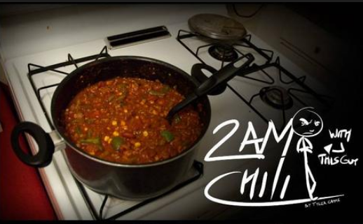

2am Chili

Description
Absolutely flippin delicious chili recipe that is guaranteed to make you new friends, make a crap ton of it and share it with your new friends, or even neighbors.
Original recipe located here
Ingredients
The Base
- 1 large can of Tomato Sauce
- 1 normal can of Tomato Sauce
- 1 can of diced tomatoes
- 1 green bell pepper
- 1 garlic
- 1 onion (vidalia)
- 1.5 lbs of ground beef
- 1 or 2 cans of light red kidney beans
- 1 can of green beans
- 1 can of corn
- brown sugar
- cooking oil of your choice